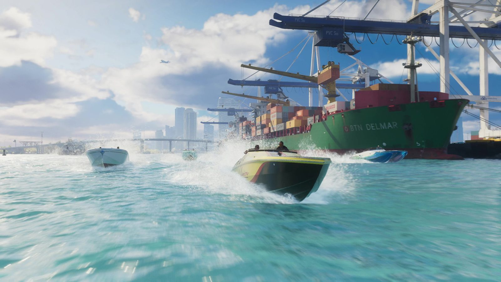
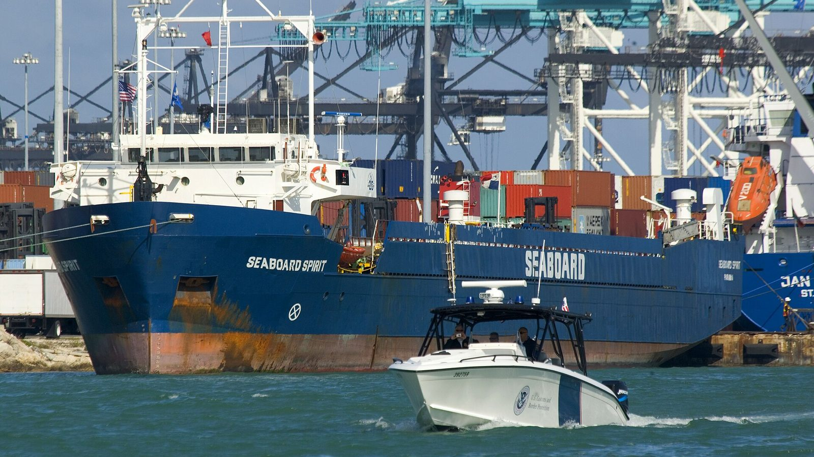
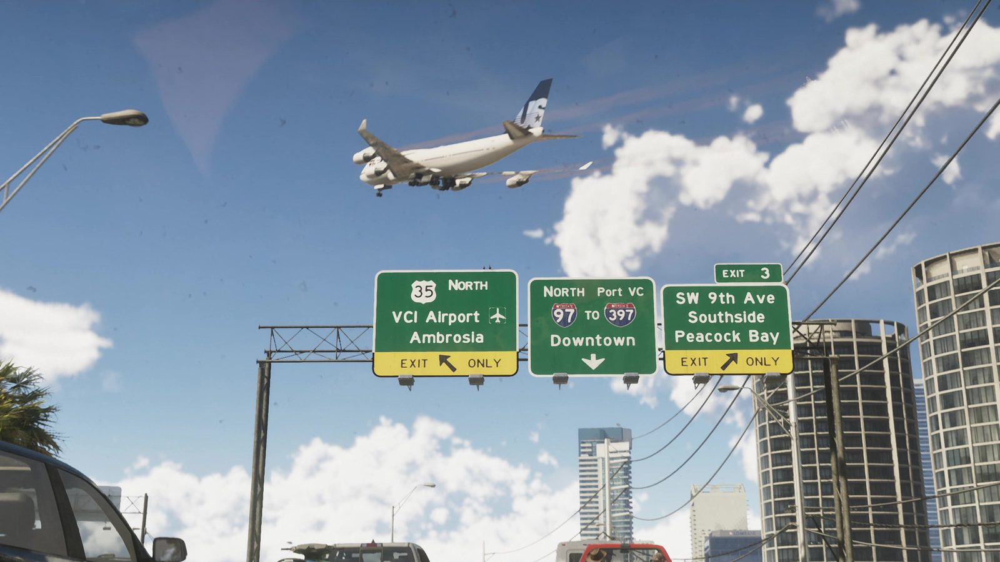
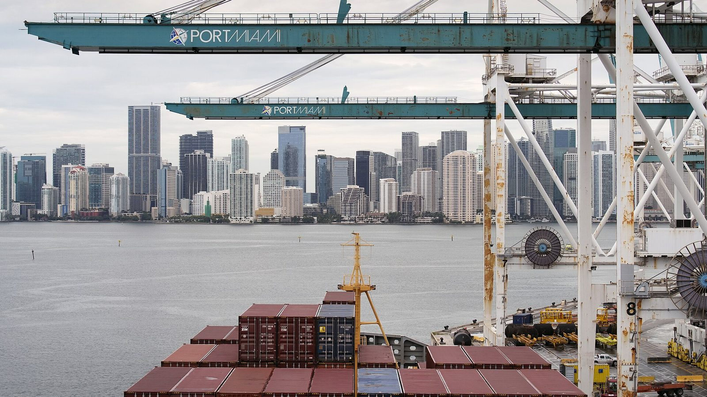

Порт Вайс-Сити и PortMiami
Опубликовано:
Контейнерный терминал с портальными кранами прямо напротив небоскрёбов центра — так выглядит PortMiami. Rockstar поменяла только название: на указателях в игре — «Port VC».


- В первом трейлере гоночные катера мчатся мимо сухогруза, который разгружают портальные краны.
- За кранами видны высотки и мост — порт стоит прямо напротив центра города.
- PortMiami — самый загруженный круизный порт мира: в 2024 финансовом году — рекордные 8,2 млн пассажиро-проходов.
- На указателе над трассой во втором трейлере написано «North Port VC» — порт Вайс-Сити.
Что в игре
Кадр из первого трейлера: по бирюзовой воде несутся гоночные катера, поднимая брызги. Справа — зелёный сухогруз с горой разноцветных контейнеров, над ним синие портальные краны. На горизонте — стеклянные высотки центра и длинный мост через залив.
Во втором трейлере порт появляется на дорожном указателе: «North Port VC» — съезд к порту Вайс-Сити.

Что в реальности
PortMiami стоит на острове посреди залива Бискейн, прямо напротив центра Майами. Остров собран из трёх исторических островов — Dodge, Lummus и Sam's. Здесь сразу два порта в одном: контейнерный терминал с портальными кранами и круизные причалы.
По числу круизных пассажиров PortMiami — первый в мире, его называют «круизной столицей мира». В 2024 финансовом году через порт прошло рекордное число пассажиров — 8,2 млн пассажиро-проходов. Контейнеров здесь обрабатывают больше миллиона TEU в год.

Грузовики из PortMiami не едут через центр города. В 2014 году под заливом открыли тоннель PortMiami Tunnel: он выводит машины из порта прямо на скоростные трассы. А в 2013 году начали углублять подходной канал до 52 футов (около 16 м), чтобы принимать самые большие контейнеровозы после расширения Панамского канала.
Совпадает и отличается
| PortMiami | GTA 6 | |
|---|---|---|
| Контейнерный терминал с портальными кранами | Да | 🟢 Да |
| Порт напротив высоток центра | Да | 🟢 Да |
| Сухогрузы с контейнерами | Да | 🟢 Да |
| Название | PortMiami | 🟡 Port VC (на указателе) |
| Круизные лайнеры | Да | Узнаем в игре |
Источники: Rockstar Games (трейлеры 1 и 2 GTA 6); Miami-Dade County — PortMiami; Seatrade Cruise News — рекорд PortMiami 2024.
Реальные фото: Фото: CBP Photography, Public domain · Wikimedia Commons; Фото: photo by James Tourtellotte, Public domain · Wikimedia Commons. Кадры игры: Rockstar Games.
Каждый день — одно сравнение: кадр игры рядом с реальным фото. Подписывайтесь:
YouTubeInstagramTikTok
 vs
vs
 vs
vs
 vs
vs